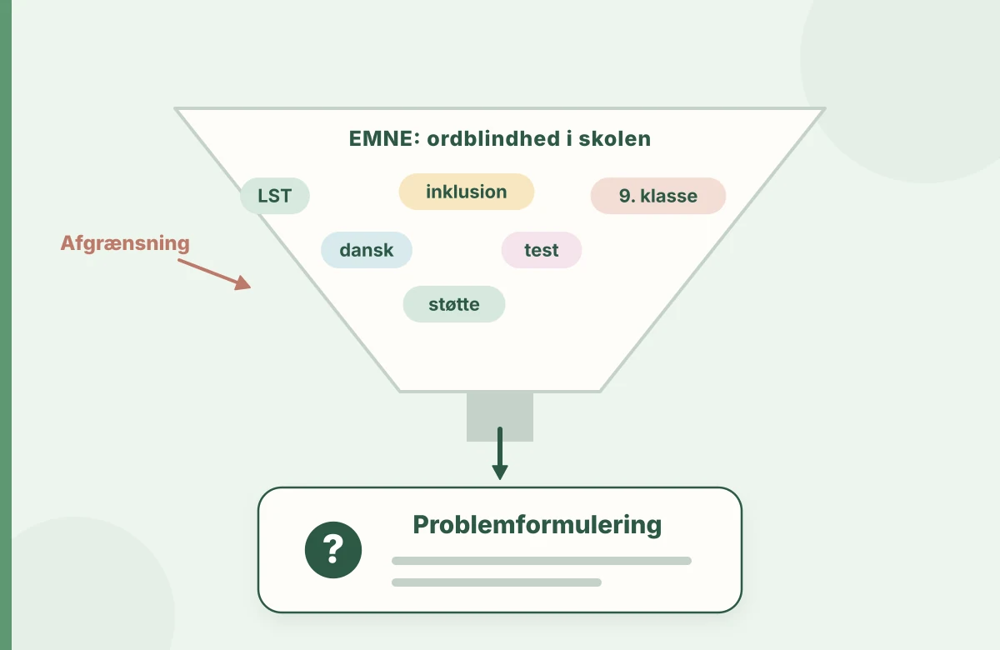

Faglig fordybelse
Brug kilderne til videre læsning, og orientér dig i studiekravene på din uddannelse.
Eksempler og cases er udarbejdet til øvelsesbrug.
En god opgave begynder med noget præcist, du undrer dig over. Her lærer du at gøre emnet undersøgelsesbart og vælge teori derefter.
Til studieopgaver på læreruddannelsen og læsevejlederuddannelsen. Brug også spørgsmålene, når du skal undersøge en situation fra praktikken.

En god opgave begynder med noget præcist, du undrer dig over. Her lærer du at gøre emnet undersøgelsesbart og vælge teori derefter.
“Ordblindhed og undervisning” er et bredt emne. En problemformulering peger på et konkret spørgsmål, der kan undersøges. Du kommer videre ved at finde en konkret situation, hvor undervisningen stiller krav til elevens læsning: En 5. klasse skal arbejde med en historisk kildetekst, men nogle elever får så meget af deres opmærksomhed bundet i afkodningen, at de har svært ved at drøfte indholdet.
Spørg først: Hvad sker der? Derefter: Hvad vil jeg forstå? Og til sidst: Hvad har jeg mulighed for at undersøge? De tre spørgsmål hjælper dig til at afgrænse opgaven.
“Hvordan hjælper man ordblinde elever til at blive bedre til at læse?”
Uklart klassetrin, uklart fagligt fokus og en effektpåstand, som kræver omfattende dokumentation.“Hvordan kan planlagt lytteadgang og før-læsningsarbejde understøtte deltagelsen i arbejde med historiske kildetekster i en 5. klasse?”
Afgrænset kontekst, konkrete didaktiske greb og noget, du kan observere.Formuleringen er et eksempel på et muligt undersøgelsesspørgsmål, ikke en opgave, der på forhånd lover effekt.
En opgave mister retning, når metoden, teorien og analysen peger i hver sin retning. Brug disse tre spørgsmål:
En kort observation fortæller noget om elevens handlinger i en bestemt situation. En undersøgelse af udvikling over tid kræver flere iagttagelser. Formulér hellere en problemstilling, der passer til dine data.
Iagttagelse: To elever deltager aktivt i mundtlig samtale om et historisk billede, men siger meget lidt under arbejdet med en skriftlig kilde.
Mulige forklaringer: Vanskeligheder med afkodning, ukendt ordforråd, tekstens opbygning eller den måde opgaven stilles på. Forskellige forklaringer kræver forskellige oplysninger.
Afgrænsning: Undersøg, hvilke deltagelsesmuligheder eleverne får, når kilden præsenteres både som tekst og med lydstøtte, og når centrale begreber er gennemgået inden.
Data: To planlagte observationspunkter, anonymiserede elevbesvarelser og kort elevfeedback. Aftal på forhånd med skolen, hvad der må indsamles, og hvordan materialet beskyttes.
Analyse: Sammenhold dine observationer med teorier om læsning, tilgængelighed og stilladsering. Vurdér alternative forklaringer.
Skriv fem korte sætninger: Jeg har lagt mærke til … Jeg undrer mig over … Jeg vil undersøge … Jeg kan indsamle … Jeg vil bruge denne viden til … Skriv derefter din problemformulering i én sætning og test den: Kan jeg svare på den med den tid og de data, jeg har?
Hvad er dit afgrænsede spørgsmål, og hvordan hænger det sammen med de data, du har adgang til?
Brug kilderne til videre læsning, og orientér dig i studiekravene på din uddannelse.
Eksempler og cases er udarbejdet til øvelsesbrug.
Find et relevant ark i materialebanken, eller tag guiden med i din studiegruppe.
Åbn materialebanken